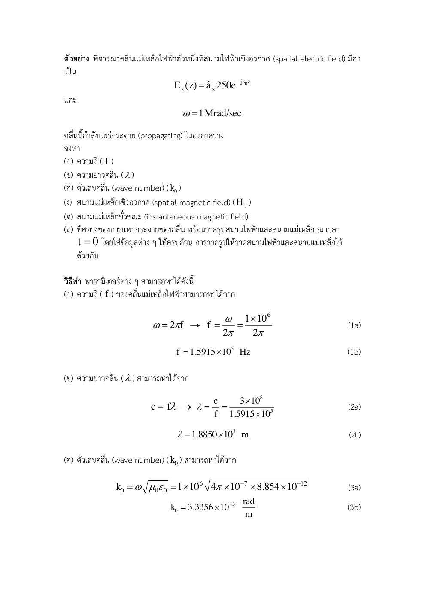
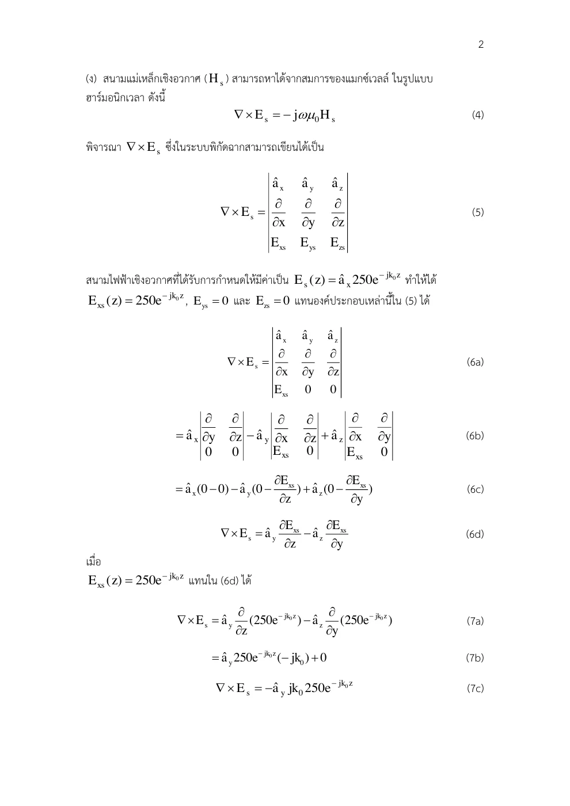
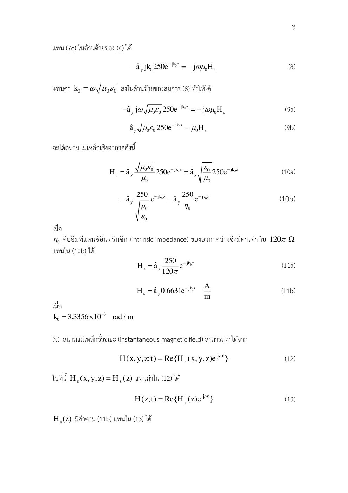
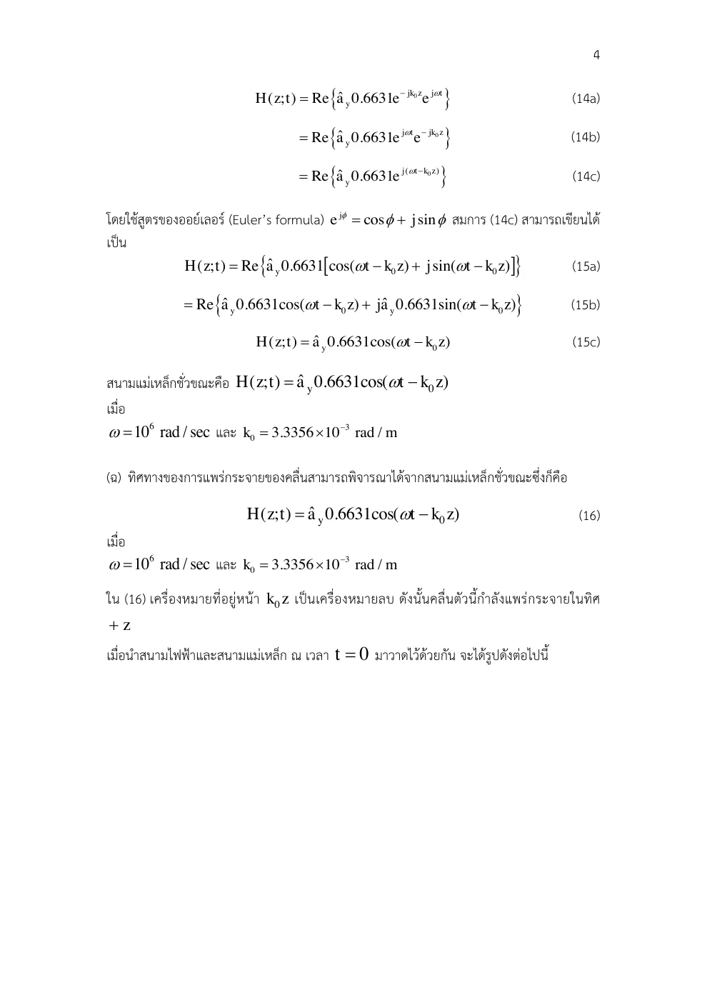

01 นิยามทั่วไปของเฟสเซอร์
E(r,t)=Re{Es(r)ejωt}
เหตุใดจึงแปลงรูปเช่นนี้? เลือกคอนเวนชัน eʲωᵗ และแอมพลิจูด peak ตลอดบท ไม่ผสมกับคอนเวนชันเวลาติดลบหรือ RMS
Time Harmonic & Plane Waves · Hayt §9.3–9.4 และ §10.1–10.3; Sadiku §9.7 และ §10.2
สมการที่ E กับ H สร้างกันตามเวลาทำให้เกิดคลื่นเดินทางได้อย่างไร และจะอ่านทิศทางจากเฟสได้อย่างไร?
เฟสเซอร์เก็บขนาดและเฟสของสัญญาณที่มีความถี่เดียว แล้วแยกปัจจัยเวลาร่วมออก การแยกนี้ทำให้อนุพันธ์เวลากลายเป็นการคูณ jω แต่ไม่ได้ตัดข้อมูลตำแหน่งออก สนามเชิงอวกาศยังมีเฟสที่เปลี่ยนตาม z
คลื่นเดินทางคือจุดเฟสเดียวกันย้ายตำแหน่งเมื่อเวลาเพิ่ม ถ้าเฟสเป็น ωt−βz คงที่ ต้องเพิ่ม z ตาม t จึงเดิน +z ส่วน E และ H ตั้งฉากกันและตั้งฉากทิศเดินคลื่น พลังงานชี้ตาม E×H
อิมพีแดนซ์คลื่น η เป็นอัตราส่วนขนาด E ต่อ H ในตัวกลาง ไม่ใช่ความต้านทานของลวด อวกาศว่างมีประมาณ 377 Ω การวาด E และ H บนกราฟเดียวต้องระบุว่าปรับสเกล เพราะหน่วยและแอมพลิจูดต่างกัน
ขอบเขตแบบจำลอง: ความถี่เดียว peak, eʲωᵗ, ตัวกลางเนื้อเดียวเชิงเส้นไร้แหล่ง σ=0 และคลื่นระนาบ
เหตุใดจึงแปลงรูปเช่นนี้? เลือกคอนเวนชัน eʲωᵗ และแอมพลิจูด peak ตลอดบท ไม่ผสมกับคอนเวนชันเวลาติดลบหรือ RMS
เหตุใดจึงแปลงรูปเช่นนี้? เฟสเซอร์ไม่ขึ้นกับ t จึงดึงออกและใช้อนุพันธ์เอ็กซ์โพเนนเชียล หากหลายความถี่ต้องแยกแต่ละความถี่
เหตุใดจึงแปลงรูปเช่นนี้? ใช้ σ=0, ρv=0 และ ε,μ คงที่ จึงลดเกาส์ของ D,B เป็น divergence ของ E,H ได้
เหตุใดจึงแปลงรูปเช่นนี้? j²=−1 ทำให้ลบหน้าและลบจาก j² ตัดกัน ขั้นนี้เชื่อมการเปลี่ยนของสนามทั้งสองเข้าด้วยกัน
เหตุใดจึงแปลงรูปเช่นนี้? พจน์ gradient divergence หายเพราะบริเวณไร้ประจุและวัสดุคงที่ ได้สมการคลื่น Helmholtz
เหตุใดจึงแปลงรูปเช่นนี้? คำตอบทั้ง e⁻ʲᵝᶻ และ eʲᵝᶻ เป็นสองทิศเดินทาง เลือกตามแหล่งและขอบของปัญหา
เหตุใดจึงแปลงรูปเช่นนี้? สนาม x ที่เปลี่ยนตาม z ให้ curl ตาม y แสดงอนุพันธ์ก่อนตัด −j ทั้งสองข้าง
เหตุใดจึงแปลงรูปเช่นนี้? β/(ωμ)=√(ε/μ)=1/η ฐาน x×y=z จึงพลังงานเดิน +z
เหตุใดจึงแปลงรูปเช่นนี้? ใช้ c≈3×10⁸ m/s และ η₀≈120π Ω ร่วมกันเพื่อให้การปัดค่าทั้งข้อสอดคล้องกัน
เหตุใดจึงแปลงรูปเช่นนี้? คงหน่วย A/m และค่า peak ส่วนจริงของผลคูณเอ็กซ์โพเนนเชียลคืนสนามชั่วขณะ
เหตุใดจึงแปลงรูปเช่นนี้? ปัจจัยที่ไม่ขึ้นกับ t คือเฟสเซอร์ ถ้าเริ่มจาก sinψ ต้องเขียน cos(ψ−π/2) จึงเพิ่มเฟส −90°
เหตุใดจึงแปลงรูปเช่นนี้? ผลคูณ E×H เป็นกำลังต่อพื้นที่เฉลี่ยของคลื่นไร้การสูญเสีย ตัวประกอบครึ่งมาจากค่าเฉลี่ย cos² และใช้แอมพลิจูด peak
เขียนสูตรทั่วไป → ระบุพิกัดและทิศ → วิเคราะห์ด้วยมือ → ใช้ขอบเขต → ตรวจหน่วย SI และความหมาย
เสาอากาศเปลี่ยนพลังงานจากกระแสในตัวนำเป็นคลื่นที่พลังงานไหลในอวกาศ การจับคู่ E,H และทิศพลังงานเป็นพื้นฐานของการวัดโพลาไรเซชัน
สนามและอิมพีแดนซ์เชื่อมต่อกับสายส่งใน Hayt บท 10 ส่วนคลื่นระนาบอยู่บท 11 การออกแบบการส่งพลังงานต้องรู้ว่ามีทั้งสนาม E และ H แม้ตัวนำเป็นเพียงขอบของบริเวณสนาม
ลองอธิบายด้วยคำของตนเอง: เมื่อกลับจาก e⁻ʲᵝᶻ เป็น eʲᵝᶻ โดย E ยังตาม x ทิศ H ต้องเปลี่ยนอย่างไรจึง E×H เดิน −z?
เลื่อนเวลาในภาพคลื่นโดยคงเฟสเชิงอวกาศ ตรวจว่าจุดยอดเดินทิศใด แล้วกลับเครื่องหมาย β เพื่อกลับทิศ
ก่อนปรับ: ทำนายทิศและขนาด · หลังปรับ: อธิบายด้วยสมการและเงื่อนไข
นำสนามและเฟสไปต่อยอดสู่สายส่ง เสาอากาศ และการถ่ายโอนพลังงาน
เลขหน้าทั้งหมดนับหน้า PDF รวมปก ตำราเป็นแหล่งตรวจวิธีและนิยาม ไม่ได้กล่าวว่าข้อมูลทุกตัวอย่างตรงกับข้อสอบ บทอธิบายและการพิสูจน์ด้านบนเรียบเรียงเพื่อการสอน
ใช้เฟสเซอร์แยกการแปรตามเวลากับการแปรตามตำแหน่ง ภายใต้คอนเวนชัน exp(jωt) อนุพันธ์ตามเวลาคือ jω สมการเคิร์ลของแมกซ์เวลล์นำไปสู่เฮล์มโฮล์ส และกำหนดทิศกับขนาดสนามแม่เหล็กของคลื่น
อ่าน สไลด์หลัก · หน้า PDF 1 ควบคู่กับคำอธิบายด้านล่าง เพื่อเทียบรูปและลำดับสมการ
สูตร k และ η นี้ใช้ตัวกลางเอกพันธุ์ เชิงเส้น ไอโซทรอปิก และไม่มีการสูญเสีย ภายใต้ exp(jωt): exp(−jkz) เดินทาง +z อย่าข้ามจาก E ไป H ด้วย E/η ต้องเขียนแมกซ์เวลล์ ดีเทอร์มิแนนต์ และอนุพันธ์ก่อน
ใช้ ∇•Es = 0 ในตัวกลางเอกพันธุ์ไร้แหล่ง ฟาราเดย์ทำให้ Hs ของคลื่นย้อนมีเครื่องหมายตรงข้ามกับคลื่นไปข้างหน้า คืนสนามจริงด้วย Re{Hs exp(jωt)} และตรวจทิศด้วยเฟสคงที่กับ E×H
| สัญลักษณ์ | ความหมาย / คำอ่าน | SI |
|---|---|---|
| ω | ความถี่เชิงมุม | rad/s |
| k | เลขคลื่น wave number | rad/m |
| η | อิมพีแดนซ์ intrinsic impedance | Ω |
| f | ความถี่ | Hz |
| λ | ความยาวคลื่น | m |
แสดง 46 หน้า
แต่ละรายการเรียบเรียงภาษาไทย พร้อมภาพต้นฉบับหน้าเดียวกัน ภาพคงรูปเวกเตอร์และลำดับการพิสูจน์ของอาจารย์ เปิดเฉพาะหน้าที่ต้องการอ่าน
| สัญลักษณ์ | คำอ่านและความหมาย | SI |
|---|---|---|
| x,y,z; r,ρ; θ,ϕ | เอ็กซ์ วาย แซด; อาร์ โร; ทีตา ไฟ · พิกัดและมุม | m; m; rad |
| E, D; H, B | อี ดี; เอช บี · สนามและฟลักซ์ไฟฟ้า/แม่เหล็ก | V/m, C/m²; A/m, T |
| J, K; ρv, ρs | เจ เค; โรซับวี โรซับเอส · กระแสปริมาตร/ผิวและประจุปริมาตร/ผิว | A/m², A/m; C/m³, C/m² |
| ε, μ, σ; εr, μr | เอปไซลอน มิว ซิกมา · สภาพยอม ความซาบซึมได้ สภาพนำ; ค่าสัมพัทธ์ | F/m, H/m, S/m; ไม่มีหน่วย |
| P, χe | พี ไคซับอี · โพลาไรเซชันและความไวทางไฟฟ้า | C/m², ไม่มีหน่วย |
| I, Q, q; V, V0 | ไอ คิว คิว; วี วีซับศูนย์ · กระแส ประจุรวม/ย่อย ศักย์/แรงดันกำหนด | A, C, C; V, V |
| C, W; S, A; d,L | ซี ดับเบิลยู; เอส เอ; ดี แอล · ความจุ พลังงาน พื้นที่ ระยะห่าง ความยาว | F, J; m², m²; m,m |
| A, Φ | เอ ไฟตัวใหญ่ · ศักย์เวกเตอร์แม่เหล็กและฟลักซ์ | Wb/m, Wb |
| ω, f, λ; k, η | โอเมกา เอฟ แลมบ์ดา; เค อีตา · ความถี่เชิงมุม ความถี่ ความยาวคลื่น เลขคลื่น อิมพีแดนซ์ | rad/s, Hz, m; rad/m, Ω |
| v, t; dl, ds, dv | วี ที; ดีแอล ดีเอส ดีวี · ความเร็ว เวลา ส่วนย่อยความยาว ผิว ปริมาตร | m/s, s; m,m²,m³ |
| an, j; ∇, ∇2 | เอซับเอ็น เจ; เดล ลาปลาเซียน · เวกเตอร์หน่วย หน่วยจินตภาพ ตัวดำเนินการพื้นที่ | ไม่มีหน่วย; ต่อระยะทางและระยะทาง² |
| Es, Hs | อีซับเอส เอชซับเอส · เฟสเซอร์เชิงอวกาศ | V/m, A/m |
องค์ประกอบสนามมีหน่วยเดียวกับสนาม ตัวห้อย t,n คือสัมผัสและปกติ ตัวห้อย 1,2 คือตัวกลาง ไพรม์ระบุแหล่งกำเนิด a ที่เป็นค่าคงตัวจากการอินทิเกรตมีหน่วยตามสมการที่ใช้; a ที่เป็นเวกเตอร์หน่วยไม่มีหน่วย
คลื่นในอวกาศว่างมี Es = 250 e−jk0zax V/m และ ω = 1 Mrad/s ใช้ exp(jωt) จงหา f, λ, k0, Hs, H(z,t) และทิศการแพร่ พร้อมวาดกราฟสนาม E และ H ณ t=0 บนรูปเดียวกันและระบุแกน/หน่วย ใช้ค่าประมาณ c=3×108 m/s และ η0=120π Ω เพื่อให้การปัดค่าทั้งข้อสอดคล้องกัน
ALL-Q11 · คลื่นเชิงตัวเลข · เรียบเรียงจากไฟล์จริง · Set 22 เฉลย · หน้า PDF 1 · ชุดโจทย์เดิม · หน้า PDF 31 · Sadiku Example 10.1 สนามคลื่นระนาบ · หน้า PDF 424
ทำไมจึงทำขั้นนี้? แปลง Mrad/s เป็น rad/s ก่อนใช้ f=ω/(2π)
ทำไมจึงทำขั้นนี้? เลือกคอนเวนชัน eʲωᵗ และแอมพลิจูด peak ตลอดบท ไม่ผสมกับคอนเวนชันเวลาติดลบหรือ RMS
ทำไมจึงทำขั้นนี้? เฟสเซอร์ไม่ขึ้นกับ t จึงดึงออกและใช้อนุพันธ์เอ็กซ์โพเนนเชียล หากหลายความถี่ต้องแยกแต่ละความถี่
ทำไมจึงทำขั้นนี้? ใช้ σ=0, ρv=0 และ ε,μ คงที่ จึงลดเกาส์ของ D,B เป็น divergence ของ E,H ได้
ทำไมจึงทำขั้นนี้? j²=−1 ทำให้ลบหน้าและลบจาก j² ตัดกัน ขั้นนี้เชื่อมการเปลี่ยนของสนามทั้งสองเข้าด้วยกัน
ทำไมจึงทำขั้นนี้? พจน์ gradient divergence หายเพราะบริเวณไร้ประจุและวัสดุคงที่ ได้สมการคลื่น Helmholtz
ทำไมจึงทำขั้นนี้? คำตอบทั้ง e⁻ʲᵝᶻ และ eʲᵝᶻ เป็นสองทิศเดินทาง เลือกตามแหล่งและขอบของปัญหา
ทำไมจึงทำขั้นนี้? สนาม x ที่เปลี่ยนตาม z ให้ curl ตาม y แสดงอนุพันธ์ก่อนตัด −j ทั้งสองข้าง
ทำไมจึงทำขั้นนี้? β/(ωμ)=√(ε/μ)=1/η ฐาน x×y=z จึงพลังงานเดิน +z
ทำไมจึงทำขั้นนี้? ใช้ c≈3×10⁸ m/s และ η₀≈120π Ω ร่วมกันเพื่อให้การปัดค่าทั้งข้อสอดคล้องกัน
ทำไมจึงทำขั้นนี้? β=ω/c และ λ=2π/β ต้องใช้ความถี่เชิงมุมเดียวกัน
| ax | ay | az |
| ∂∂x | ∂∂y | ∂∂z |
| Exs | Eys | Ezs |
ดีเทอร์มิแนนต์ใช้สนามเฟสเซอร์และองค์ประกอบเชิงอวกาศ ก่อนแทนฟังก์ชันตามตำแหน่ง การหารด้วย −jωμ0 ทำให้เครื่องหมายลบหักล้าง
ทำไมจึงทำขั้นนี้? อนุพันธ์เชิงอวกาศของ Ex ให้ส่วน y ของเคิร์ล ก่อนหาร −jωμ
เฟสคงที่ให้ dz/dt = ω/k0 > 0 จึงไป +z; ax × ay = az เป็นการตรวจอิสระ กราฟ E และ η0H เป็นโคไซน์เฟสเดียวกัน ดูกราฟในบท Set 22 และระบุแกน x,y,z ขนาดและความยาวคลื่นครบ
ทำไมจึงทำขั้นนี้? คืนเวลาจริงแล้วตรวจทิศด้วยเฟสคงที่และ E×H
E(z,t)=Ex0cos(ωt−k0z)ax V/m เขียนในรูป Re{Es(x,y,z)ejωt} และหา Es
ALL-Q12 · แปลงเฟสเซอร์ · เรียบเรียงจากไฟล์จริง · ALL-Q12 · หน้าโจทย์และเฉลย · หน้า PDF 36 · Set 22 · ตัวอย่างเฟสเซอร์ · หน้า PDF 1 · Hayt §11.1 · คลื่นและเฟสเซอร์ · หน้า PDF 385
ทำไมจึงทำขั้นนี้? กำหนดคอนเวนชัน eʲωᵗ ก่อนเปรียบเทียบเฟส
ทำไมจึงทำขั้นนี้? ส่วนจริงของเอ็กซ์โพเนนเชียลคือโคไซน์ ไม่ต้องใช้สูตรไซน์หรือเปลี่ยนแอมพลิจูด
ทำไมจึงทำขั้นนี้? ปัจจัยที่ไม่ขึ้นกับเวลาเป็นเฟสเซอร์เชิงอวกาศ
ทำไมจึงทำขั้นนี้? สนามนี้ขึ้นกับ z เท่านั้น คืนส่วนจริงได้โจทย์เดิม เฟส ωt−k0z เดิน +z และแอมพลิจูดยังคงค่า peak
ตัวกลาง εr = 5 มี E = 0.9 cos[1.257 × 10−6(3 × 108t − z√5)]ax MV/m จงหาแอมพลิจูดของ Jd
Drill ตำรา: เลือกส่วนที่อยู่ในขอบเขต · Hayt D9.3(c) · หน้า PDF 302 · Set 21 · สูตรพื้นฐานที่เกี่ยวข้อง · หน้า PDF 8
ทำไมจึงทำขั้นนี้? เขียน Jd=ε∂E/∂t แล้วแปลง MV/m เป็น V/m ก่อนคูณ
ทำไมจึงทำขั้นนี้? สัมประสิทธิ์ของ t ภายในเฟสคือ ω ไม่ใช่ค่าคงตัวเชิงอวกาศ
ทำไมจึงทำขั้นนี้? อนุพันธ์ cos ให้ −sin คูณ chain rule ω
แอมพลิจูดเป็นค่าบวก 15.0 mA/m² เครื่องหมายลบของไซน์บอกเฟสของสนามเต็ม ไม่ใช่แอมพลิจูดติดลบ
ทำไมจึงทำขั้นนี้? แอมพลิจูดใช้ขนาดบวก เครื่องหมายลบเป็นข้อมูลเฟส
ω=500 Mrad/s; R=0.2 Ω/m, L=0.25 µH/m, G=10 µS/m, C=100 pF/m หา α,β,λ,vp,Z0 ด้วยประมาณสูญเสียต่ำ หัวข้อสายส่งนี้เป็นการต่อยอด ไม่สุ่มในห้องสอบตามขอบเขตสไลด์
เรียบเรียงจากตัวอย่างที่สอน · Hayt D10.1 · สายส่ง · หน้า PDF 331 · Set 22 · ความเร็วเฟส (ฐานเชื่อมโยง ไม่ใช่โจทย์สายส่ง) · หน้า PDF 36
ทำไมจึงทำขั้นนี้? เลือกสาขารากที่ α≥0; R,L,G,C เป็นค่าต่อความยาว
ทำไมจึงทำขั้นนี้? ทั้งสองอัตราส่วนเล็กกว่าหนึ่งมาก จึงใช้ประมาณสูญเสียต่ำได้
ทำไมจึงทำขั้นนี้? α มีหน่วย Np/m ไม่ใช่ dB/m ส่วน β เป็นเฟสต่อความยาว
ทำไมจึงทำขั้นนี้? ส่วนจินตภาพติดลบเพราะ R/ωL มากกว่า G/ωC ผลตรงคำตอบตำราโดยความแม่นยำของประมาณ
เลื่อนพารามิเตอร์เพื่อดูแนวโน้มและเครื่องหมาย แล้วกลับไปพิสูจน์ด้วยสูตรตั้งต้นในตัวอย่าง
ตัวอย่างเพิ่มเติม โน้ต และภาพลายมือแสดงเป็นหน้าต้นฉบับเรียงลำดับ ใช้คำอธิบายและวิธีทำในบทนี้ประกอบ
แปลง Mrad/s เป็น rad/s แล้วเริ่มสูตร f,k0,λ

เขียนฟาราเดย์เฟสเซอร์และดีเทอร์มิแนนต์ก่อนแทน Es

ดิฟเฟอเรนเชียล exp(−jk0z) แล้วจัดรูป Hs ด้วย η0

คืนสนามทันทีด้วย Re{Hs exp(jωt)} เป็นโคไซน์

ใช้สูตรออยเลอร์เขียน cos(ωt−k0z) เป็นส่วนจริงของ exp(jωt)exp(−jk0z); Es เก็บส่วนตำแหน่งและไม่มีเวลา t